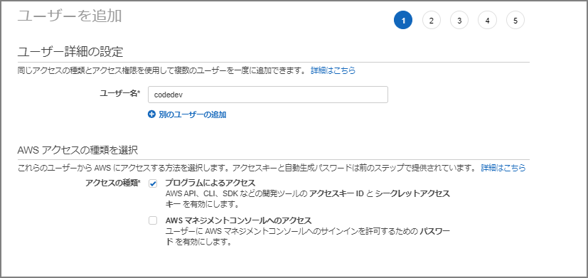
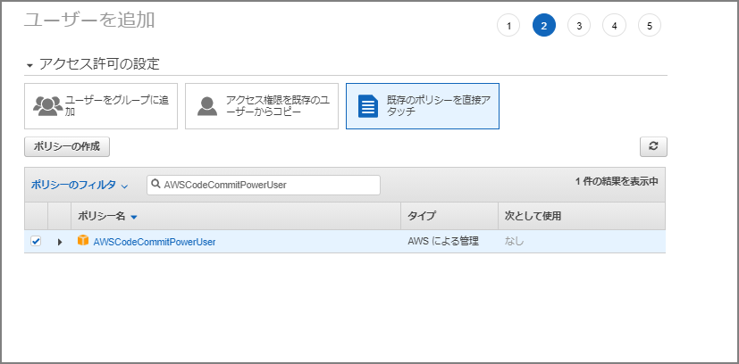
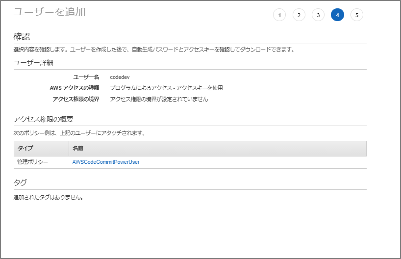
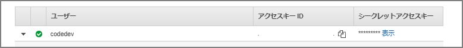
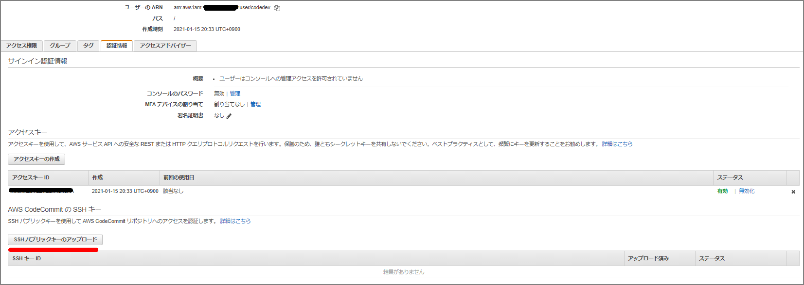
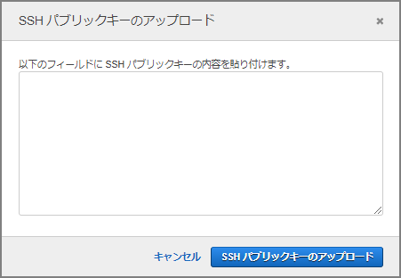
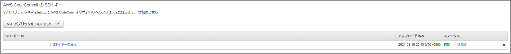

WindowsのローカルPCからCodeCommitを使う初期手順
IAMユーザ作成
IAMユーザを作成して下記の管理ポリシーをアタッチする。
- AWSCodeCommitPowerUser
CodeCommit でのアイデンティティベースのポリシー (IAM ポリシー) の使用 - AWS CodeCommit https://docs.aws.amazon.com/ja_jp/codecommit/latest/userguide/auth-and-access-control-iam-identity-based-access-control.html#managed-policies-poweruser




Gitをインストール
既にインストールされているので省略。
C:\Users\imazaj>git --version
git version 2.30.0.windows.2
ダウンロードであれば下記から。
Git - Downloads http://git-scm.com/downloads
Git と CodeCommit 用のパブリックキーとプライベートキーの設定
Git for WindowsのGit Bashを立ち上げssh-keygenコマンドで鍵ファイルを作成
$ ssh-keygen
Generating public/private rsa key pair.
～省略～
C:\Users\imazaj>dir C:\Users\imazaj\.ssh
2019/12/17 15:47 <DIR> .
2019/12/17 15:47 <DIR> ..
2021/01/15 20:39 2,610 id_rsa
2021/01/15 20:39 575 id_rsa.pub
2019/12/17 15:47 799 known_hosts
IAMユーザの"認証情報"タブに移動して、AWS CodeCommit の SSH キーに公開鍵ファイルをアップロードする。

公開鍵情報を貼り付けてアップロード

SSHパブリックキーIDを控える。

~/.ssh/configを作成して、下記情報を入力。UserはSSHパブリックキーID。IdentityFileは秘密鍵を指定。
Host git-codecommit.*.amazonaws.com
User xxxxxxxxxxxxxxxxxxx
IdentityFile ~/.ssh/id_rsa
SSH設定の確認
ssh git-codecommit.us-east-2.amazonaws.com
リポジトリのクローンを作成
toolrepoというリポジトリに、README.mdを作成済
C:\Users\imazaj>git clone ssh://git-codecommit.ap-northeast-1.amazonaws.com/v1/repos/toolrepo
Cloning into 'toolrepo'...
Warning: Permanently added the RSA host key for IP address 'xxxxxxxxxxxx' to the list of known hosts.
remote: Counting objects: 3, done.
Receiving objects: 100% (3/3), 215 bytes | 23.00 KiB/s, done.
C:\Users\imazaj\toolrepo>dir
ドライブ C のボリューム ラベルは OSDisk です
ボリューム シリアル番号は E49E-5113 です
C:\Users\imazaj\toolrepo のディレクトリ
2021/01/15 20:56 <DIR> .
2021/01/15 20:56 <DIR> ..
2021/01/15 20:56 0 README.md
1 個のファイル 0 バイト
2 個のディレクトリ 3,597,164,544 バイトの空き領域
README.mdを編集してcommit
C:\Users\imazaj\toolrepo>git status
On branch master
Your branch is up to date with 'origin/master'.
Changes not staged for commit:
(use "git add <file>..." to update what will be committed)
(use "git restore <file>..." to discard changes in working directory)
modified: README.md
no changes added to commit (use "git add" and/or "git commit -a")
C:\Users\imazaj\toolrepo>git add README.md
C:\Users\imazaj\toolrepo>git commit -m "first commit"
[master 2ab1525] first commit
1 file changed, 1 insertion(+)
C:\Users\imazaj\toolrepo>git push
Enumerating objects: 5, done.
Counting objects: 100% (5/5), done.
Writing objects: 100% (3/3), 252 bytes | 252.00 KiB/s, done.
Total 3 (delta 0), reused 0 (delta 0), pack-reused 0
To ssh://git-codecommit.ap-northeast-1.amazonaws.com/v1/repos/toolrepo
357bc6c..2ab1525 master -> master
参考
Windows で AWS CodeCommit リポジトリへの SSH 接続をセットアップする手順 - AWS CodeCommit https://docs.aws.amazon.com/ja_jp/codecommit/latest/userguide/setting-up-ssh-windows.html